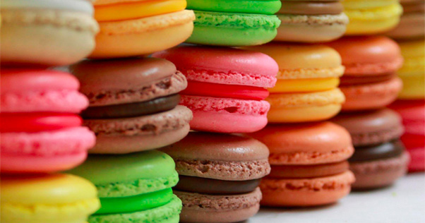
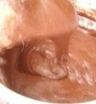
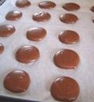
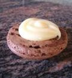

Macarons
INGREDIENTS
| Ingredients |
| For white chocolate ganache: |
For macarons: |
| White chocolate |
100 g |
Almond flour |
110 g |
| For dark chocolate ganache: |
Cacao powder |
25 g |
| Dark chocolate |
80 g |
Egg whites |
120 g |
| Cream 38% |
50 ml |
Fine granulated sugar |
50 g |
Preparation method
Step 1
How to get almond flour:
- In a store where they sell nuts, you can ask them to grind the nuts into flour (they do this in a coffee grinder).
- Sift it
- The almonds should be peeled if you are making white macarons.
- If making chocolate macarons, you can use regular almonds.
How to make flour for macarons:
- Preheat the oven to 150 degrees.
- Mix almond flour, powdered sugar, and cocoa in a food processor for 2 minutes. Line a baking sheet with parchment paper, pour the dry mixture onto the sheet, and dry it in the oven for 5 minutes.
Sift through a very fine sieve.

Step 2
- Whisk the egg whites, gradually adding granulated sugar until shiny. Add the dry mixture to the egg whites and gently mix from top to bottom.
- The egg mixture will have a viscous consistency.

Step 3
Prepare the ganache.
- Heat the cream, add the pieces of chocolate.
- Let it cool and refrigerate (preferably overnight).
- Stir until fully dissolved.

Step 4
- Place the mixture into a pastry bag with a round nozzle and pipe small, evenly sized circles onto a baking sheet lined with parchment paper.
- Leave the baking sheet for 1 hour (I had a crust form in 30 minutes) at room temperature to form a crust.
"This is very important; if the crust does not form, cracks will appear on the surface of the macarons during baking. You can check by touching the surface with your finger; if it doesn't stick, you can bake it."
Bake in a preheated oven for 12 minutes, turning the baking sheet 180° after 6 minutes to ensure even baking.

Step 5
- Remove the baking sheet from the oven and remove the parchment paper with the cookies.
- Sprinkle cold water on the cookies, then return the parchment with the cookies back to the baking sheet.

Step 6
Assembly. Squeeze the filling from the pastry bag onto one half of the macaron and cover with the other half.

HOUSEKEEPING TIP
«Macaron (French: Macaron)— is a French confection made from egg whites, powdered sugar, granulated sugar, ground almonds, and food coloring. It is usually made in the shape of cookies; cream or jam is placed between two layers. The finished product is soft, with a smooth surface, and melts in the mouth. Macarons are sold in French McDonald’s; since 2010, these cookies have been known in the USA and Canada; their version is known in Japan.»
-
Cooking time:
-
1 hour
-
Difficulty:
-
medium
-
Cuisine:
-
French